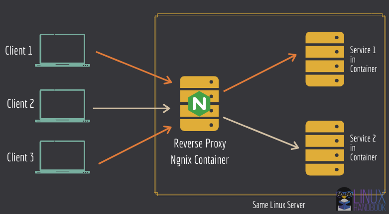

Introduction
This simple application demonstrates how to use and deploy Nginx Reverse proxy in a docker container and use it to route traffic to other services internally (another container) and an external service. A reverse proxy server is a type of proxy server that typically sits behind the firewall in a private network and directs client requests to the appropriate backend server.

Credits : https://linuxhandbook.com/nginx-reverse-proxy-docker/
Application components
This application has essentially 2 services - a web app & a nginx reverse proxy engine, which are both deployed as a container using docker compose. This start-up project demnstrates how to deploy these services as containers and how to configure the nginx reverse proxy
Application structure
|── docs # Contains edited nginx configuration file that will be copied to the image
| ├── img # Contains all images referenced in mkdocs
| ├── *.md # Other mkdocs .md files
├── mkdocs.yml # YAML for for mkdocs
├── .gitattributes
|
├── default.conf # Contains edited nginx configuration file that will be copied to the image
|
├── Dockerfile # Dockerfile for the web-app
├── Dockerfile.nginx # Dockerfile for the nginx reverse-proxy
|
├── docker-compose.yaml # Defines docker-compose.yaml file for web-app & nginx-reverse-proxy
|
├── helloworld.py # Simple hello world python program using Flask API
|
├── README.md # Standard README.md file